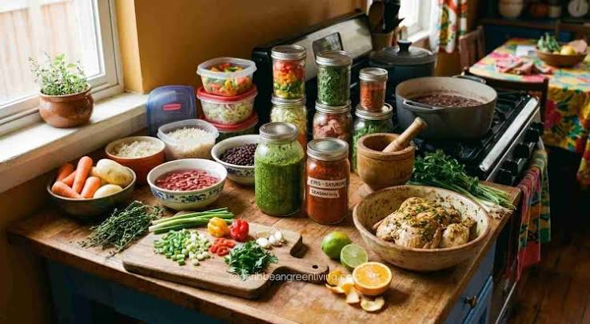

About Our Recipe Hub
Welcome to the Island Flavor Recipe Hub — your home for authentic, easy-to-follow Caribbean recipes. Founded in 2026, our mission is to celebrate local culinary traditions and inspire home cooks of all skill levels.
Whether you are craving a comforting pot of Trinidadian Pelau, crispy Bake & Shark, or fresh tropical punch, we provide clear step-by-step guides, complete nutritional information, and practical cooking tips.
Explore our growing collection of recipes, discover traditional techniques, and feel free to submit your own family favourites!

Featured Recipe Categories
Explore our curated collection of authentic dishes sorted by meal type and occasion:
- Street Food Classics — Quick, flavourful favourites like Bake & Shark, Doubles, and Pholourie
- Hearty Mains — One-pot wonders including Trinidadian Pelau, Callaloo, and Stewed Chicken
- Seafood Specialties — Fresh coastal dishes like Tobagonian Curry Crab & Dumplings and Pepper Shrimp
- Sweet Treats & Desserts —Traditional desserts like Coconut Bake, Kurma, and Cassava Pone
- Tropical Beverages — Refreshing homemade drinks including Sorrel, Mauby, and Soursop Punch
Top 5 Caribbean Cooking Secrets
- Always prepare a fresh batch of Green Seasoning (culantro/bandhanya, garlic, scallions, and thyme) before cooking.
- Marinate meats for at least 4 hours to allow the herbs and spices to penetrate deeply.
- Master the art of browning sugar to achieve the rich caramel colour needed for authentic stews and pelau.
- Control the heat of Scotch Bonnet peppers by leaving them whole in the pot rather than chopping them.
- Simmer coconut milk dishes on low heat to prevent curdling and maximize richness.
Recipe Nutrition & Prep Details
Compare preparation times, cooking times, and estimated calories for our featured dishes:
| Dish Name | Prep Time | Cook Time | Calories (kcal) | Main Ingredients |
|---|---|---|---|---|
| Trinidadian Pelau | 20 mins | 45 mins | 450 | Chicken, rice, pigeon peas, coconut milk |
| Bake & Shark | 30 mins | 15 mins | 520 | Fried dough, shark fillet, garlic sauce |
| Curry Crab & Dumplings | 25 mins | 35 mins | 480 | Blue crab, curry spices, flour dumplings |
| Callaloo | 15 mins | 30 mins | 180 | Dasheen bush, okra, coconut milk |
Request a Recipe
Have a favourite Caribbean dish you would like us to feature? Fill out the form below to let us know!
Useful Culinary Links
Explore more authentic Caribbean food history and recipes across the web: